Multiplicative Cascade Synthesis of Signals and Textures
This numerical tour explores multifractal signal and texture synthesis.
Contents
This tour is written by Pierre Chainais and Gabriel Peyré.
The processes we deal with belong to the family of Infinitely Divisible Cascades (IDC). Only the simulation of the subfamily of Compound Poisson Cascades (CPC) is really simple to implement in 1D, 2D or even ND. Indeed, the synthesis of CPC can be understood as the product of a random number of indicator function of balls (of a 1D segment or a 2D ball) with randomized radius and randomized amplitude.
If the distribution of the amplitudes and radii is well chosen, this leads to the synthesis of a function that is the density of a positive scale invariant measure. More precisely, this measure is multifractal.
To obtain the final measure signal/image, the simulated measure density is integrated or pseudo-integrated thanks to some scale invariant low-pass filtering in the Fourier domain.
The application of cascade for texture synthesis is detailed in
Infinitely divisible cascades to model the statistics of natural images, P. Chainais, IEEE Trans. on Pattern Analysis and Machine Intelligence, Vol. 29 no 12, Dec. 2007.
Visit the homepage of Pierre Chainais for additional information and softwares.
Installing toolboxes and setting up the path.
You need to download the following files: signal toolbox, general toolbox and graph toolbox.
You need to unzip these toolboxes in your working directory, so that you have toolbox_signal, toolbox_general and toolbox_graph in your directory.
For Scilab user: you must replace the Matlab comment '%' by its Scilab counterpart '//'.
Recommandation: You should create a text file named for instance numericaltour.sce (in Scilab) or numericaltour.m (in Matlab) to write all the Scilab/Matlab command you want to execute. Then, simply run exec('numericaltour.sce'); (in Scilab) or numericaltour; (in Matlab) to run the commands.
Execute this line only if you are using Matlab.
getd = @(p)path(p,path); % scilab users must *not* execute this
Then you can add the toolboxes to the path.
getd('toolbox_signal/'); getd('toolbox_general/'); getd('toolbox_graph/');
1D Multiplicative Cascades
We consider here the synthesis of 1D signals using multiplicative compound Poisson cascades (CPC).
Duration of the simulation : [0, T]
T = 10;
Resolution of the cascade (the smallest scale at which details will be added).
rmin = 0.02;
Sampling period of the simulation. Number of points.
Delta_t = rmin/2; n = T/Delta_t+1;
Number of multipliers Wi.
lambda = (1/rmin-1)*(T+1); % to ensure scale invariance, scales are distributed as 1/r^2. N = round(lambda); % N = poissrnd(N,1,1); % rigorously, N is a Poisson r.v. of expectation lambda
Time positions of the Poisson point process in the time/scale plane are uniformly distributed to ensure stationarity. Side effects are avoided by extending the cascade to [-1/2, 0] and [T T+1/2].
ti = -1/2+rand(1,N) * (T+1);
ti_1 = -1/2+rand(1,round(T+1))*(T+1);
ti = [ti_1 ti]; % for exact scale invariance
Scales ri of the points. Should be distributed according to dr/r^2, to have scale invariance.
umax = 1/rmin-1;
ui = [zeros(1,length(ti_1)) rand(1,N) * umax ]; % ui = 1/ri-1
ri = (1+ui).^(-1);
Display the Poisson point process in the scale-space plane.
figure(1)
clf
plot(ti, ri, '.')
axis([-1/2,T+1/2,0,1]);
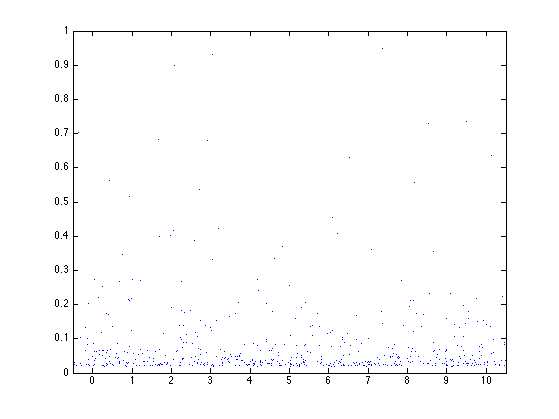 Parameters for the law of multipliers Wi (Wi>0). Here we choose a log-normal law. Another simple possible choice is to set Wi=2/3 for all the Wi.
sigma2 = 0.2; mu = -sigma2/2;
Condition of non-degeneracy:
if -(exp(2*(sigma2+mu))-1)<-1 disp('Be careful ! This cascade will degenerate as rmin -> 0 !') end
Random log-normal multipliers.
N = length(ti); % the number of multipliers = number of time-scale points.
Wi = exp( randn(N,1)*sqrt(sigma2)+mu );
Positions along time axis.
t = linspace(0,T,n);
Initialize the signal and normalize the measure.
H1 = 1 - exp(mu+sigma2/2); f = ones(n,1) * exp(H1) / rmin^H1;
We show here the first step of the multiplicative cascade: iterations are on the multipliers (ti,ri,Wi).
Select the points in the cone of influence of (ti(1),ri(1)).
i = 1;
I = find(abs(t-ti(i))<=ri(i)/2); % t belongs to a disk centered on ti(i)
Perform the multiplication with the random multiplier.
f(I) = f(I) * Wi(i); clf plot(t,f) axis([0 T 0 1.1*max(f)])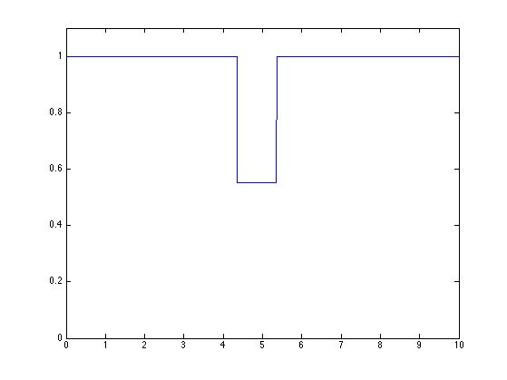
Exercice 1: (check the solution) Perform the cascade. Display intermediate steps.
exo1;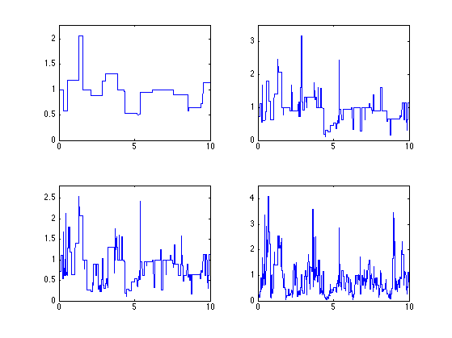
Display the random measure.
figure(1) clf plot(t,f) axis([0 T 0 1.1*max(f)])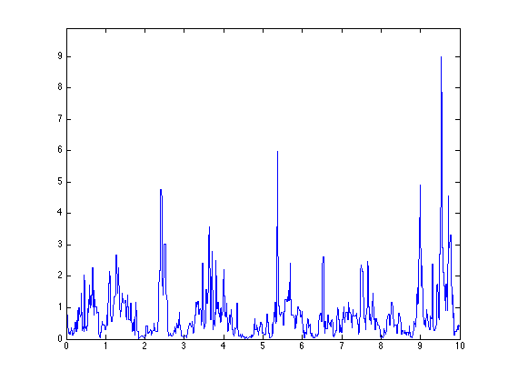
Exercice 2: (check the solution) Compute several realization for the same log-normal parameters.
exo2;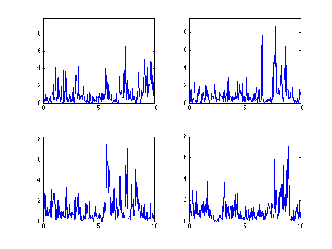
Exercice 3: (check the solution) Compute realizations for different log-normal parameters mu and sigma2. Use the same distribution of points.
exo3;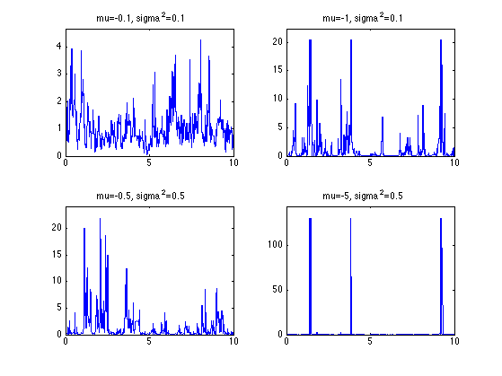
2D Multiplicative Cascades
To generate 2D cascade, one needs to throw points on a 3D scale space domain.
Size of the image.
n = 128;
Minimum scale, should be roughly 1/n.
rmin = 1/n;
Maximum scale.
Xmax = 1; Ymax = 1;
Number of points in the cascade.
lambda = 2/pi*(1/rmin^2-1)*(Xmax+1)*(Ymax+1); % density g(r)dr=4/pi/r^3 dr N = round(lambda); % should be a Poisson r.v. with expectation lambda.
Scale of the points. Should be distributed according to 1/height^3, to have scaling invariance.
umax = (1/rmin^2-1); % u will be a uniform variable in [0 1/rmin^2-1]
ui = rand(1,N) * umax;
ri = (1/rmin^2-ui).^(-1/2);
Position of the points.
xi = -1/2 + rand(1,N) * (Xmax+1); yi = -1/2 + rand(1,N) * (Ymax+1);
Display the points in the scale-space plane.
clf
h = plot3(xi, yi, ri, '.');
axis([-1/2,Xmax+1/2,-1/2,Ymax+1/2,0,1]);
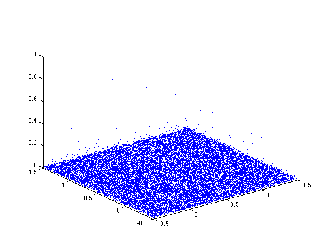 Parameters for the log-normal law.
sigma2 = 0.08; mu = -sigma2/2;
Random log-normal multipliers.
Wi = exp( randn(N,1)*sqrt(sigma2)+mu );
Position in the X/Y plane. We enlarge the square in order to be able to use periodic boundary conditons.
x = linspace(0,Xmax,n); y = linspace(0,Ymax,n); [X,Y]= meshgrid(x,y);
Initialization and normalization of the image.
H1 = 1 - exp(mu+sigma2/2); f = ones(n)/rmin^H1;
We give here the example of the first mutiplication.
Localization of the signal locations that are influenced by the scale/space point indexed by (xi(1),yi(1),ri(1)). This corresponds to the intersection of the image plane and a cone of influence.
i = 1; I = find( (X-xi(i)).^2+(Y-yi(i)).^2 <=ri(i)^2/4 );
Multiplication of the image with the random multiplier.
f(I) = f(I) * Wi(i);
Exercice 4: (check the solution) Perform the full cascade, display intermediate steps.
exo4;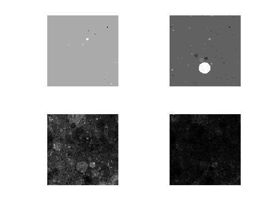
Display the image. It corresponds to a 2D multi-fractal measure.
clf imageplot(f)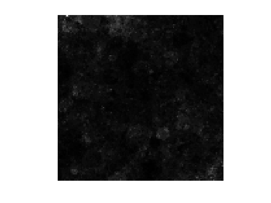
To compute the final texture, we perform a spectral integration, which corresponds to a low pass filtering.
Fourier frequency localizations.
x = [0:n/2 -n/2+1:-1]; [U,V] = meshgrid(x,x); S = sqrt(U.^2+V.^2); S(1,1) = 1;
Exponent of integration.
alpha = .5;
Fourier domain integration.
F = real( ifft2( fft2(f)./S.^alpha ) );
Exercice 5: (check the solution) Compute the fractional integration for several values of alpha.
exo5;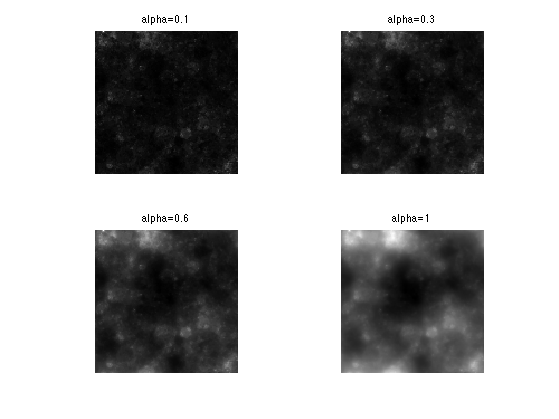
Exercice 6: (check the solution) Perform the cascade for several log-normal parameters mu and sigma2.
exo6;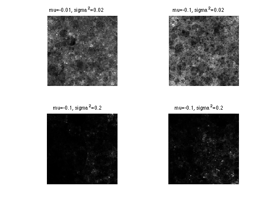